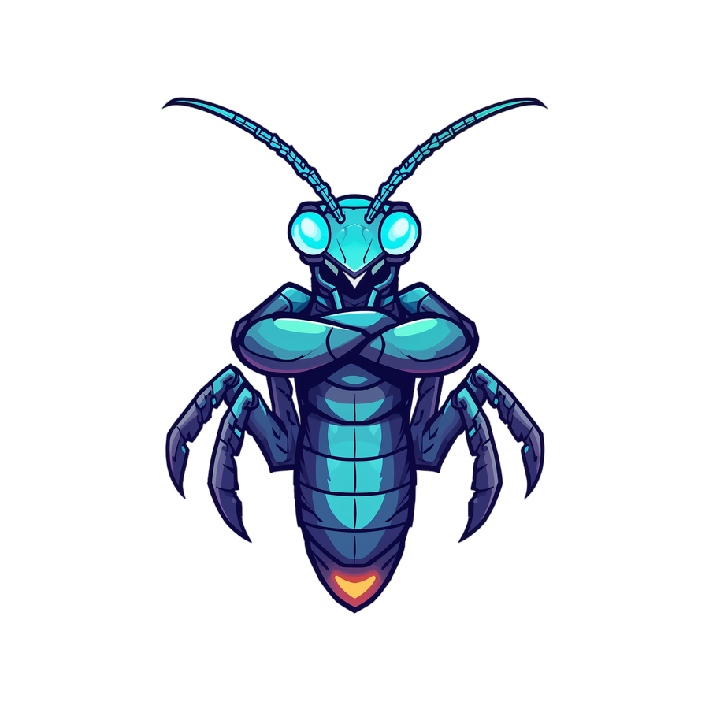

Every call passed validation. No reentrancy, no overflow, no revert. Sentinel reads the statistical shape of on-chain behavior and flags the drift — before the funds leave.

// watching window 96,624,968Signature-based and rule-based tools look for known-bad patterns. The Euler attack didn't break a single rule — it just behaved nothing like normal. That's a different question, and it needs a different sensor.
A donation + self-liquidation sequence drained Euler. Every call was type-valid and authorized.
The behavioral hypervector drifted off the safe manifold three windows early — long before settlement.
Sentinel encodes each transaction window into a 10,000-dimensional hypervector and measures how far it drifts from learned-safe behavior. Three things make it different.
Catch only what someone already wrote a rule for. Novel exploits — like Euler — pass clean.
No rule list. Measures statistical distance from safe behavior, so unseen attack shapes still light up.
Per-tx inference cost, GPU dependency, non-deterministic output. Hard to anchor on-chain or reproduce.
Bind/bundle/permute over bit-vectors. Deterministic, seeded, CPU-only — runs in the time between blocks.
A red flag with no story. An on-call engineer still has to reverse-engineer what actually happened.
Names the drifting feature, anchors the alert on Mantle, and writes a human brief via Z.ai GLM.
HDC works with zero training data and zero GPU. Sentinel fits its safe manifold from a short warm-up window of real on-chain history — no labeled dataset, no model training, no accelerator. The drift math is the model.
Scroll the journey. Each stage runs deterministically on CPU, seeded with MASTER_SEED=1337.
Stream confirmed transactions for a watched contract from Mantle via Etherscan V2. Bundle them into a sliding window of recent calls.
Each call's selector, value, gas and entropy features are bound and bundled into one 10,000-dim hypervector — the window's behavioral fingerprint.
Compare the new hypervector to the safe-manifold prototype. Hamming distance, robust-scaled with MAD, becomes a single drift score in [0,1].
A hysteresis gate plus run-length collapse (BOCPD) confirm a sustained shift — not a one-block blip — keeping false positives at zero.
Sentinel names the feature driving the drift and asks Z.ai GLM to write a one-paragraph human brief — what shifted and why it matters.
The alert — window id, drift score, type — is logged to the Sentinel registry contract on Mantle mainnet. Tamper-proof, queryable, real.
A replay of a self-attack run on Mantle: warm-up calls stay flat, then an injected high-entropy call drives drift past threshold and fires an anchored alert.
Numbers from the frozen, seeded benchmark suite — reproducible byte-for-byte via the golden-file CI test.
| Metric | Result | What it means |
|---|---|---|
| Anomaly separation | 4.3× | Attack drift vs. clean p99 |
| False positives | 0 | Across the full benchmark |
| Test suite | 84 | Passing, deterministic |
| Time to alert | ≤2 | Windows after onset |
| Anchor block | 96,624,965 | Mantle mainnet |
The full pipeline, benchmark, and on-chain registry are open source under MIT. Run the self-attack replay in under a minute.